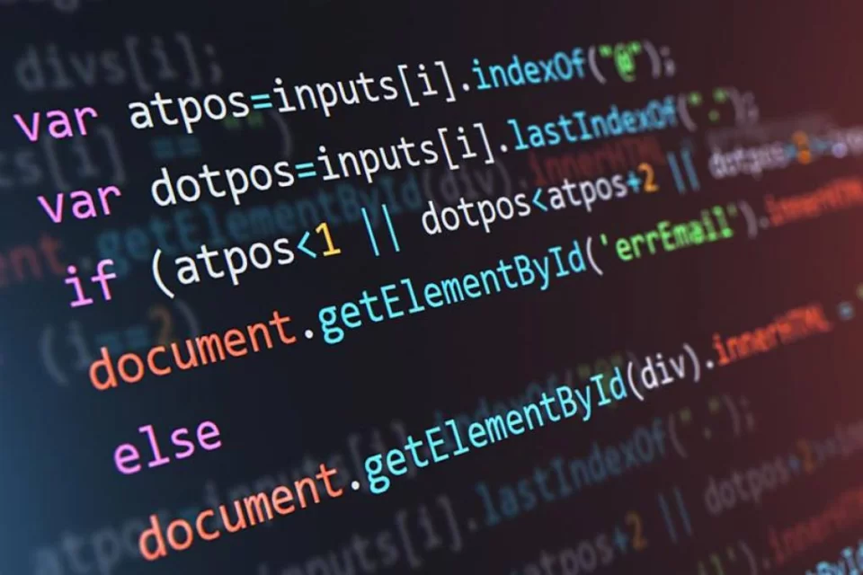

Filtragem e classificação dos dados, criado mecanismos que permitam separar apenas os elementos essenciais em determinado problema, ignorando detalhes irrelevantes.
Permite criar uma representação (ideia) do que está se tentando resolver.

É uma sequência finita de etapas ou passos, cada qual executável em um tempo finito, por uma agente computacional, natural (humano) ou sintético (computador).
É um plano, uma estratégia ou um conjunto de instruções ordenadas para solução de um problema ou execução de uma tarefa.
Sua formulação passa pelo processo de decomposição, reconhecimento de padrões e abstração.
